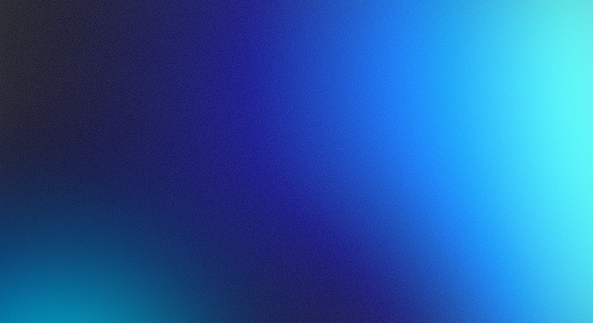
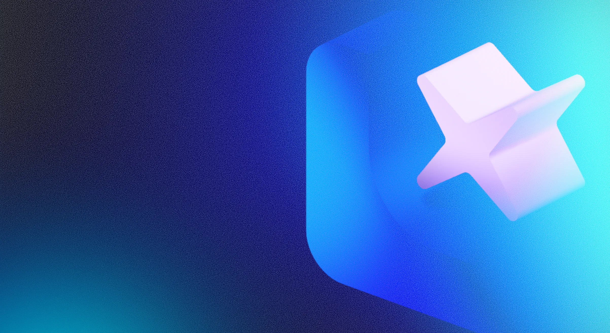

On haptic feedback, muscle memory, and why removing physical controls from cars might be the most underrated UX mistake of the last decade.
I built an interactive iPod for my portfolio hero. Animated scroll wheel, click feedback, the whole thing. It was supposed to be a flex — look what I can do in the browser. But halfway through building it I caught myself thinking: this thing felt better in 2004 than most interfaces feel today.
That's the thing about haptics. You don't notice them when they're right. You notice them when they're gone.
The iPod click wheel is one of the most studied interaction objects in design history, and for good reason. It wasn't just a capacitive surface — it had a buzzer underneath that fired on each detent as you scrolled. Your thumb learned to count without your eyes. You could navigate a playlist at the bottom of your pocket, in the dark, without looking.
That's not a gimmick. That's a different sensory channel being used for input — one that doesn't compete with your vision.
The BlackBerry Storm took a different approach: the entire touchscreen was a physical button. You could tap anywhere and the whole surface clicked down. It was weird, it was slightly ridiculous, and it worked — because it gave you confirmation that something happened. Not a visual flash, not a sound, something physical. The oldest form of feedback there is.
These were imperfect solutions to a real problem. Companies were trying to figure out how to make flat glass feel like something. Some got closer than others.
Somewhere around the early 2010s the industry collectively decided that the right answer was: nothing. Flat glass, no feedback, maybe a sound if you hadn't muted your phone. The skeuomorphic era ended and took the physical metaphors with it. Flat design was cleaner, more modern, more honest about what it was.
The problem is that "honest about what it is" isn't the same as "better to use."
Cars were where this got genuinely dangerous. Touch-sensitive buttons with no haptic response, no click, no confirmation. Backlight hidden behind a sleep mode. Controls for climate, volume, seat heating — things a driver adjusts constantly — buried under menu layers or moved to surfaces you have to look at to find. Tesla made this their identity. It wasn't just a design choice; it was a philosophy: learn the new way, trust the screen.
Some people adapted. A lot of people didn't, and drove slightly less safely while they figured out how to turn the heated seats on at 120km/h.
Recently both the EU and China moved toward requiring physical controls for certain car functions. Climate, core audio, basic navigation inputs — back to buttons. Not because regulators are nostalgic, but because the data on distraction finally caught up with the aesthetic choices made in boardrooms.
This is what a course correction looks like when the industry won't do it itself.
Ferrari's Luce concept is the more interesting version of this argument. The interior was co-designed by Jony Ive — who spent decades at Apple defining what premium touch interaction feels like — and Marc Newson. Ive led the cockpit, specifically oriented toward the driver. The result isn't a screen-free throwback. It's a considered answer to the question: what does a physical interface look like when you actually think about who's using it and what they need their hands and eyes doing?
That's a different question than "how many functions can we put on this display."


There's another dimension to this that doesn't get talked about enough.
Capacitive touchscreens depend on conductivity. Sweaty hands. Cold hands. Gloves. Worn fingerprints — a real condition, more common than you'd think, that affects elderly users, people who work with their hands, certain chemotherapy patients. For these users, a flat glass surface isn't just less satisfying. It literally doesn't work.
Voice control solves some of this. But voice has its own failure modes: accents, ambient noise, the social discomfort of talking to your car in a parking garage. It's an additional channel, not a replacement.
The pattern here is the same one that shows up everywhere in design when you mistake preference for universal truth. "Touch is better" is a preference, held by people with typical hands, in typical conditions, who made the decision. Physical feedback isn't a legacy constraint — it's a human one.
Tesla's approach — remove the familiar, force the new behaviour — works when the new behaviour is genuinely better for everyone, and when people have the time and safety margin to learn it. In a phone, fine. In a moving vehicle, the calculus is different.
The deeper issue is that we treat the removal of physical controls as progress by default. Less stuff, cleaner surface, more software-updatable. But the sense of touch is not a workaround for people who haven't learned to use screens properly. It's a primary input channel. Haptic feedback isn't decoration — it's the thing that lets your hands operate independently of your eyes.
We knew this in 2004. The iPod wheel proved it. We forgot it for a decade because flat looked better in marketing photos.
Some things that feel like regressions are actually just corrections.
Have a project in mind? I'm always open to discussing new opportunities, collaborations, or just to say hello.
wendapatryk91@gmail.com Find me on LinkedIn